| 日付 | 2011年7月21日（木） - 2011年7月23日（土） | |||||
|---|---|---|---|---|---|---|
| 山域 | 八ヶ岳 | |||||
| メンバー | 家族（妻、長女・0歳） | |||||
| 山行形態 | 子連れ2泊3日ホテル泊 | |||||
| アクセス | 車 | |||||
| ルート (Map2) |
|
2日目
本日は霧ヶ峰に向かう。
9時過ぎに車山肩の駐車場に到着した時には、すでに大混雑
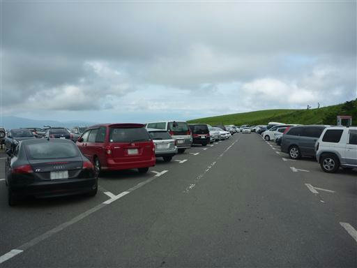
駐車場の側にニッコウキスゲの群落が広がっている。
ニッコウキスゲが咲いている部分は電気柵で囲まれている。
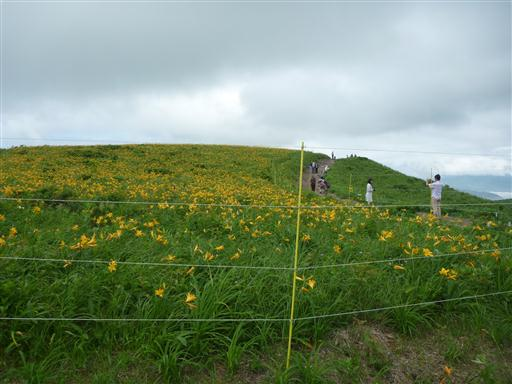
シカの食害で柵外のニッコウキスゲは食べられてしまい、まばらにしか咲いていない。

なだらかな道を登って、まずは霧ヶ峰の最高峰、車山に向かう。
大きなレーダーが建つ山頂だ。
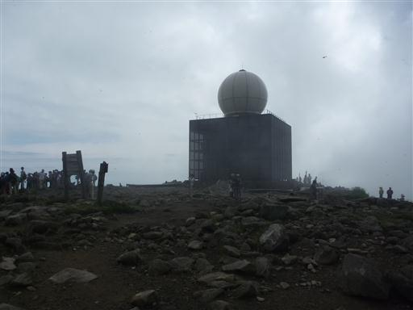
車山からは比較的急な階段道を下る。
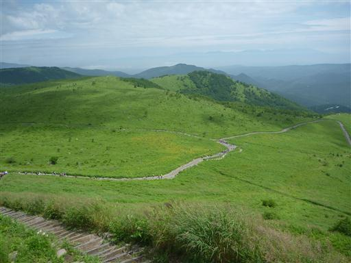
次々と人が登ってくる。平日だが人は多い。
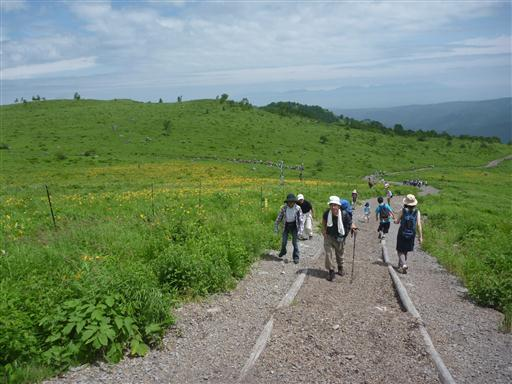
木道を辿って蝶々深山に向かう。
なだらかな丘のような山で、山の名前が美しい。
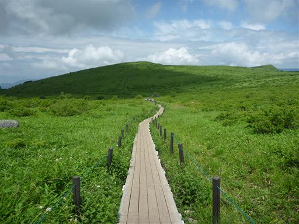
道端にウスユキソウが咲いている。
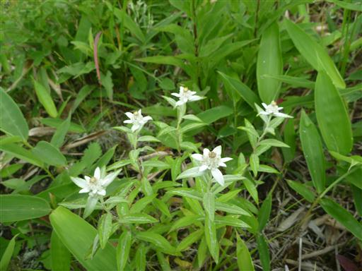
草原をピンクに染めるシモツケソウ。
他にもイブキトラノオ、コウリンカ、ハクサンフウロなどが見頃だ。
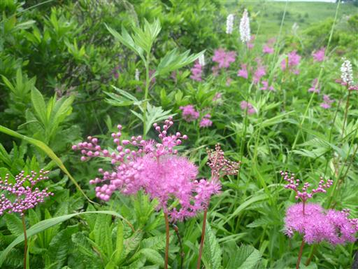
蝶々深山に到着。この山頂も人が多い。
ここから八島湿原に行くことができるが、戻ってくるのが大変なので
車山湿原を一周して車に戻ることにする。
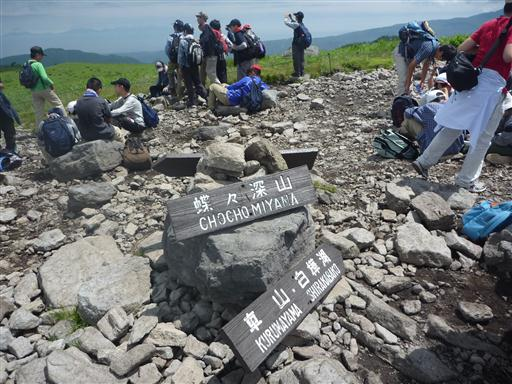
緑一色の草原がどこまでも続いている。
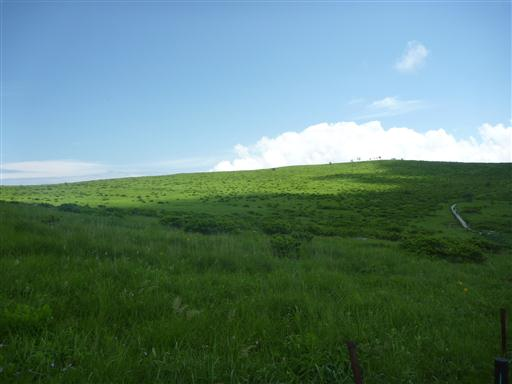
沢に水がチョロチョロと流れている。この辺りが車山湿原だ。
所々にピンクに染まったシモツケソウの群落がみられる。
背後に見えるのは車山だ。
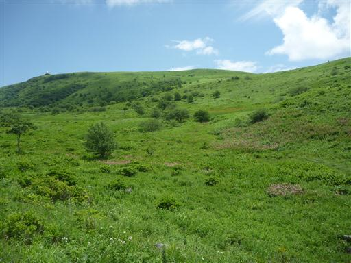
メインストリートから外れているので、道は非常に細い。
あれ程いた観光客もここにはほとんどおらず、静かな場所だ。
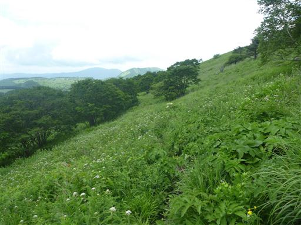
車山湿原を一周し、駐車場付近に戻ってくる。
高原の向こう側には鉢伏山などが見渡せる。
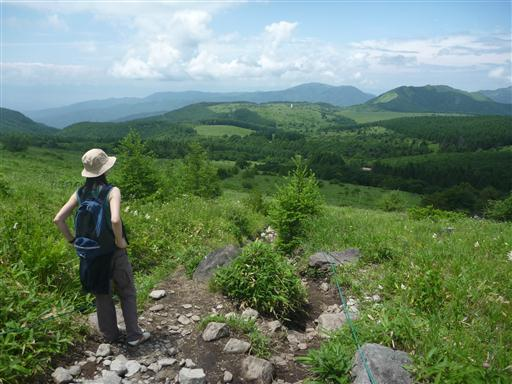
霧ヶ峰を後にし、次に美ヶ原に行ってみる。
ここも有名な観光地だ。山本小屋駐車場に車を停める。
霧ヶ峰ほど混雑はしていない。
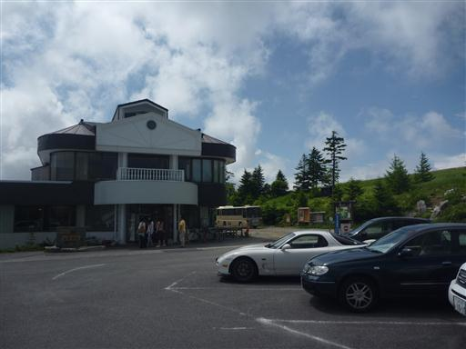
砂利道を王ヶ頭目指して歩いていく。
目の前には壁のように黒い雲が立ちはだかっている。
残念ながら、北アルプスの展望はなさそうだ。
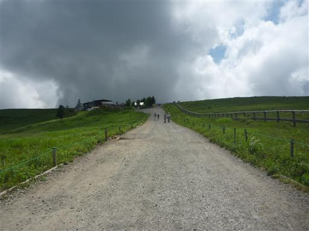
美ヶ原の頂上部分は牧場になっていて、牛や馬が放牧されている。
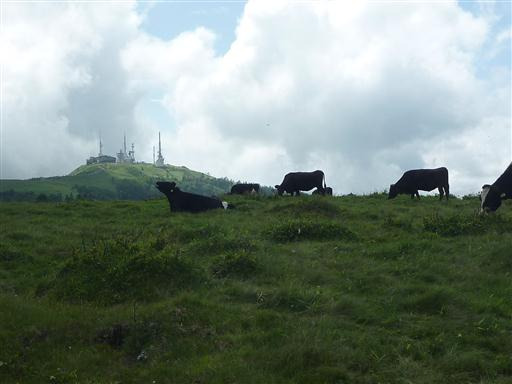
美しの塔。鐘を数回鳴らす。
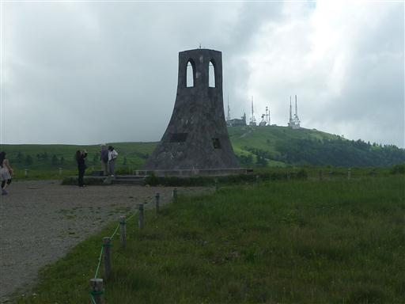
珍しい白い牛。黒い斑は顔の辺りにしかついていない。
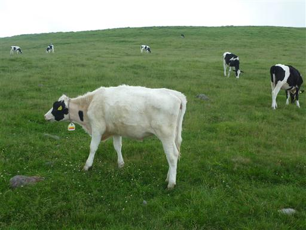
王ヶ頭の山頂部はアンテナがたくさん建っている。
先が尖ったアンテナで、遠くから見るとなかなか画になっている。
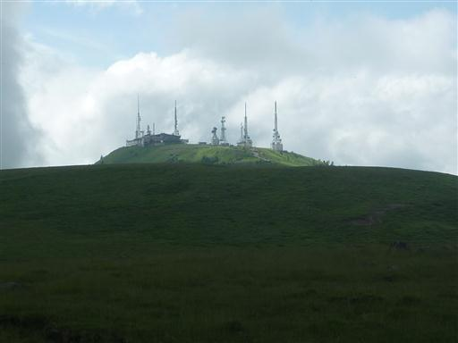
砂利道は一般車通行禁止だが、ときどき車やバスがやってくる。
平坦な砂利道が続き、歩いていると眠たくなってくる。
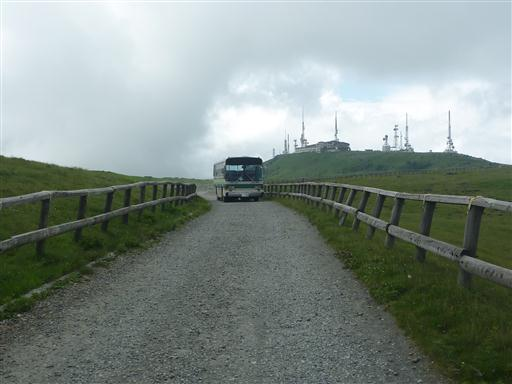
王ヶ頭の山頂に到着。
電波塔と巨大ホテルが建ち並ぶ無粋な山頂だ。
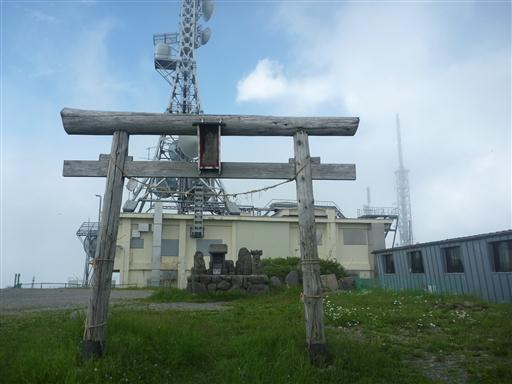
少し離れたところに寂しく山頂標識がある。
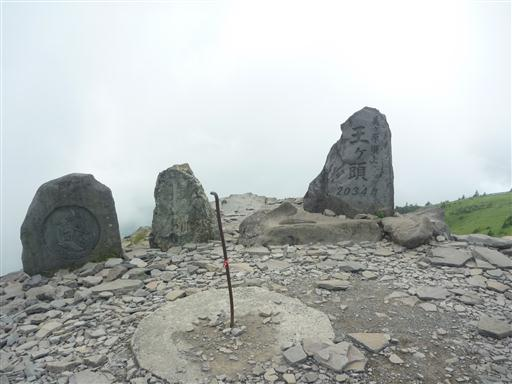
足を延ばして王ヶ鼻まで歩いてい見る。
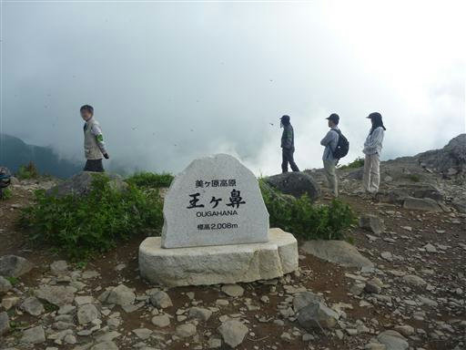
岩の下を覗くと、かなりの急傾斜で谷底まで落ち込んでいる。
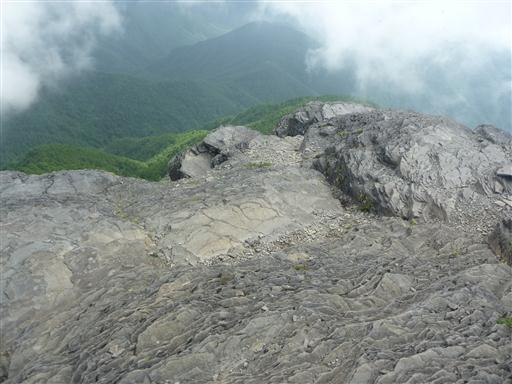
王ヶ鼻から王ヶ頭を望む。美ヶ原は山頂部分こそ平坦だが、
それ以外の部分は思った以上にしっかりとした山だ。
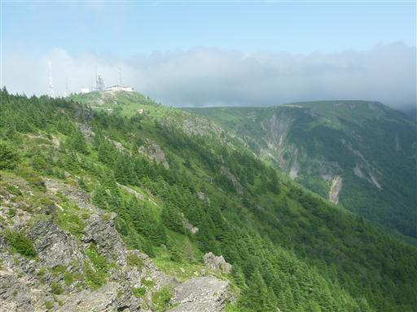
帰りは少し遠回りしてアルプス展望コースを歩くことにする。
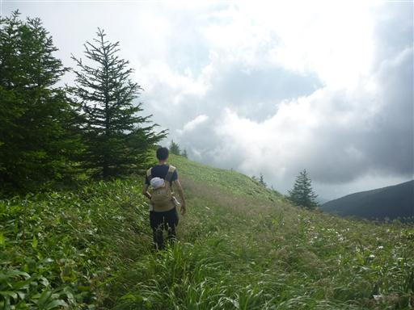
足元にナデシコが咲いている。
ナデシコジャパンはよく頑張った。
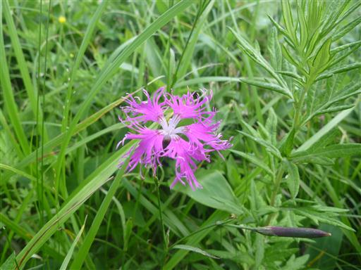
烏帽子岩に到着。平たい石が積み重なった不思議な地形だ。
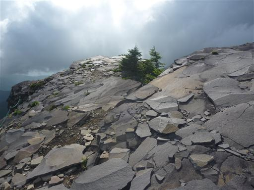
烏帽子岩から王ヶ頭を望む。目の前の崖が圧巻だ。

静かな草原の道、足元には花々、晴れていれば北アルプスの展望まで望める
なかなか素晴らしいコースだ。
美ヶ原は中央の砂利道以外は非常にいい場所だと思う。
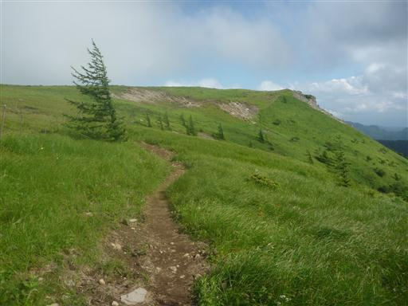
塩くればで砂利道と合流する。牛さんとも再会。
駐車場まで歩いて宿に戻る。そこそこ歩いた一日だった。